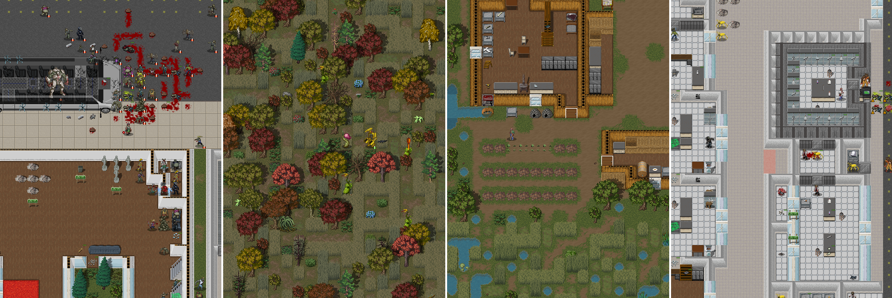

About This Game
Cataclysm: Dark Days Ahead is a turn-based survival game set in a post-apocalyptic world. While some have described it as a "zombie game", there is far more to Cataclysm than that. Struggle to survive in a harsh, persistent, procedurally generated world. Scavenge the remnants of a dead civilization for food, equipment, or, if you are lucky, a vehicle with a full tank of gas to get you the hell out of Dodge. Fight to defeat or escape from a wide variety of powerful monstrosities, from zombies to giant insects to killer robots and things far stranger and deadlier, and against the others like yourself, who want what you have...
 GameplayAs your game begins, you awaken with hazy memories of violence and terror from when the world suddenly unravelled around you. Now you need to explore your surroundings, and secure food, water and safety. After that, who knows? Long term survival will mean tapping abilities you haven’t used before, learning to survive in this new environment, and developing new skills.
System Requirements
-
Minimum:
- OS: Windows, Linux, OSX, iOS, Android.
- Processor: 300 MhZ CPU
- Memory: 64 MB RAM
- Storage: 6 GB available space
-
Recommended:
- OS: Windows, Linux, OSX, Android.
- Processor: 2GHz CPU
- Memory: 1GB RAM
- Storage: 8 GB available space